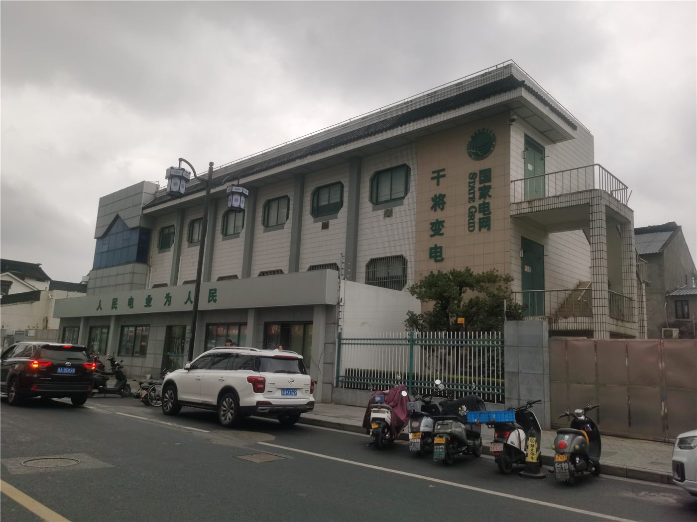

영호남 산업용 전기요금 최대 10% 인하… 발전소 인근 지역에 '거리 요금제'
정부가 영남·호남 지역 산업용 전기요금을 최대 10% 인하하기로 했다. 발전 설비가 몰려 있는 지역에 송전 비용을 덜 부담시키는 지역별 차등요금제의 첫 적용이다.
손기요 기자 · 2026.09.04
橋한국

정부가 영남과 호남 지역의 산업용 전기요금을 최대 10% 인하하는 방안을 확정했다. 전력을 생산하는 지역과 소비하는 지역 사이의 송전 거리를 요금에 반영하는 지역별 차등요금제가 실제로 적용되는 첫 사례다.
광고 문의 · 300×250한국의 발전 설비는 해안을 따라 영남과 호남에 집중돼 있는 반면, 전력 수요는 수도권에 몰려 있다. 이 구조는 장거리 송전선 건설을 계속 요구해 왔고, 송전탑 경과지 주민과의 갈등도 반복돼 왔다.
차등요금제는 이 비용 구조를 요금에 반영하자는 발상이다. 발전소와 가까운 지역의 기업은 송전 비용을 덜 유발하므로 더 낮은 요금을 적용받고, 먼 지역은 그만큼 더 부담한다. 정부는 이를 통해 전력 다소비 기업이 발전 설비 인근으로 이전할 유인을 만들겠다는 구상이다.
산업계 반응은 지역에 따라 갈린다. 영호남에 공장을 둔 기업은 비용 절감을 반기지만, 수도권과 충청권 사업장은 향후 요금 인상 가능성을 우려한다. 정부는 인상 적용 시기와 폭에 대해서는 단계적으로 검토하겠다는 입장이다.
재생에너지 확대 계획과도 맞물린다. 정부가 제시한 재생에너지 6배 확대 목표를 달성하려면 발전 설비가 더 분산돼야 하고, 그 경우 요금 지도 역시 다시 그려질 수밖에 없다.
제도의 실효성은 기업의 입지 결정이 실제로 움직이는지에 달려 있다. 전기요금은 제조업 원가에서 차지하는 비중이 업종별로 크게 다르기 때문에, 반도체·석유화학·철강 등 전력 다소비 업종에서 먼저 효과가 나타날 것으로 예상된다.
출처·참고 (사실 확인용 — 본문은 직접 재작성)
· 경향신문 2026-08-27 — https://www.khan.co.kr/article/202608270710001
· 산업통상자원부 보도자료 2026-08-26 — https://www.motie.go.kr
· 경향신문 2026-08-27 — https://www.khan.co.kr/article/202608270710001
· 산업통상자원부 보도자료 2026-08-26 — https://www.motie.go.kr